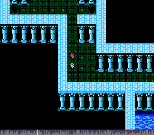
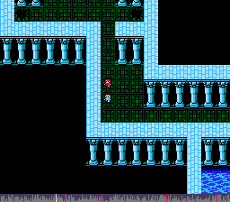

Final Fantasy 3 (Glitchless w/Encounter Skips)
by BinarynovaThis is the story of four young children who, while exploring, fall into a dark cave. After being injured during a fight with goblins they find strangely colored water and decide to drink it, hoping it will heal them. Little did they know the water would cause them to hallucinate about flying in airships, meeting strange characters, dressing in magical outfits, casting spells, and killing evil... clouds?
Timer
Timer starts on last name entry input.
Altar Cave
For all encounters here, just Fight. In the first room pick up all three chests (Potion, 2x Leather Shield). In the second room, equip both B and C with a Leather Shield during the first random encounter. Continue on, grabbing the two southern chests (Potion, Southwind). Use the healing spring to heal, then on the way to the Crystal Room grab the last two chests (Potion, Southwind).
BOSS: When fighting LandTurtle, simply have everyone Fight.
After the LandTurtle fight, talk to the Crystal to watch the cutscene. Then and . Afterwards, speak to the crystal to heal.
Overworld
After leaving the Crystal Room via the teleporter, walk south to Kazus (avoiding Ur).
Kazus
Collect the items hidden in the grass on the left (Zeus' Rage, Mithril Helm, Staff) then head to the Inn. Examine the bookcase to find a Potion, then speak with Cid.
Overworld
Head west to the desert, being sure to skip encounters as shown.
Airship
Take airship controls and fly west to Sasoon Castle.
Sasoon Castle
Enter the main building of Sasoon Castle and head up the stairs at the back of the room. Head left through the hidden wall and "under" the map, then down the stairs at the top of the hall. Grab the two chests in the small room (2x 1000 Gil) and head back up the stairs. Take the next staircase up, get the two chests on the left (Ice Spell, Leather Shield) then take the hidden path up to get the last chest (Tonfa).
Leave Sasoon Castle and fly to the Altar Cave entrance.
Altar Cave
Enter the Altar Cave, then . . . .
For all encounters here, have everyone fight except your Black Mage who should use Ice on small enemy groups.
In the first room, collect the chests in the hidden area to the right (2x 1000 gil). Continue down to the next floor and collect all the chests (Copper Ring, Nunchuck, 2x Long Sword, Sleep Spell).
Continue fighting random encounters in the second room until you have 33 CP. Try to fight the last battle near the exit of the second room. Then head back out to the airship.
Overworld
Fly your airship the short distance to Ur.
Ur
In Ur, . Heal up at the spring in the building near the entrance. Time to go shopping!
Head to the Magic Shop and buy the Pure spell. Then at the Armor Shop buy 4x Leather Armor and 1x Copper Ring. .
. . Then .
Head to the Item Shop. Sell your Sleep spell, all your Cloth Armor, Leather Shields, and Knives. Then buy 4x Eyedrops, 4x Antidotes, and 20x Potions.
Go down into the well and get the three chests (3x Potion).
Overworld
Cave of the Seal
- Grind to Level 6.
- Save and hard reset on ship tile.
B1
- Encounter skips:
- {Chests}:
- Cure
- Encounter Skips:
B2
- {Chests}:
- 500 gil
B3
- Encounter Skips:
- {Jinn}:
- A, D -> Attack
- B -> Cure
- C -> Ice
Sasoon Castle
- Sleep in the bed.
- Pick up your airship
Kazus
- {Buy}:
- 2x Mithril Rings
- 4x Mithril Gloves
- Get airship upgraded.
- {Jar}:
- Potion (Taca's House)
Overworld
- Encounter Skips:
Canaan
- Drop off Cid.
Mountain Path and Summit
- Encounter Skips:
- {Charizard}:
- Run
Overworld / Healing Spring
- {Job}:
- A -> Black Mage
- D -> Black Mage
- Healing spring.
- Encounter Skips:
Tozas
- {Buy}:
- 2x Fire
- 3x Bolt
- {Bookshelves}:
- Mithril Ring, Cloth Armor, Burning Staff, Cure 2
- {Chests}:
- Mithril Ring, Mithril Staff
Hidden Path
- {Randoms}:
- A -> Fire
- B -> Burning Rod
- C -> Ice
- D -> Fire
- Grind -> Level 7.
- Leave and save outside.
- Grind -> Level 8.
- Save and hard reset after grind.
Viking Base
- {Chest}:
- Soft
- Sleep at the Inn.
- {Chests}:
- 300 gil x2, Ice 2, Fire 2, Bolt 2
Overworld
- Encounter Skips:
Nepto’s Shrine
- Save and hard reset outside.
First Room
- Encounter Skips:
Second Room
- {Chest}:
- Serpent Sword
- Encounter Skips:
Third Room
- {Big Rat}:
- Level 2 Spells, magic items.
- Encounter Skips:
 
- Leave, give eye to Nepto.
- Sail to Argass Castle.
- Encounter Skips:
- NOT A SKIP! Turn "up" here:
- Encounter Skips:
Argass Castle
- Go upstairs to outdoors area.
- Healing Spring
- Hidden staircase to the right: bombshard, southwind, Paralyzer
- First secret area: 1000 gil x3, 100 gil, 3000 gil, 100 gil, 3000 gil, 3000 gil, 1500 gil
Overworld
- Save and hard reset. Then walk to Gurgan Valley.
- Encounter Skips:
Gurgan Valley
- Talk to head elder to get Toad spell.
- {Chests}:
- Flame Rod, Ice Rod, Wizard Robe
Overworld
- Encounter Skips:
- PARK SHIP HERE:
Tokkle
- {Grass}: (right side)
- Freezing Staff
- {Pot/Chests}: (Fireplace)
- 3-Part Nunchuck, Kenpo Gi, Phoenix Down
- {Grass}: (left side)
- Lamia Scale, Great Bow, Gods' Wine
Overworld
- Encounter Skips:
Village of the Ancients
- Lots of buying and selling here!
- {Tree}:
- Serpent Sword
- {Job}:
- A -> Monk -> Fighter
- D -> Onion Knight -> Fighter
- {Sell}:
- Paralyzer
- Copper Gloves
- Cloth
- Staff
- Ice Rod
- Fire Rod
- Long Sword
- Kenpo
- Freezing Rod
- All Nunchucks
- Lamia Scale
- Great Bow
- Bolt
- {Buy}:
- 4x Flame Mail
- 6x Serpent Sword
- 1x Exit spell
- 10x Soft
- 10x MaidKiss
- 10x EchoHerb
- 10x Eyedrop
- 10x Antidote
- 10x Potion (repeat)
- Rest at Inn
- Leave the Village of the Ancients.
Overworld
- Take chocobo back to ship.
- Save on ship. Continue on to Tower.
- Grind in ocean near tower -> 16CP
Tower of Omen
- {Job}:
- C -> Fighter
- {Random}:
- Fighters fight, WM heal or use Burning Rod.
Ground Floor
4F
- {Chest}:
- Tyrving
9F
- {Chests}:
- Salamand Sword, Zeus' Rage
10F
- {Medusa}:
- Fighters fight, WM heal as needed.
Overworld
- Take ship east around continent to Gisahl.
Gisahl
- {Chest}: (North shop)
- Shuriken
- {Sell}:
- Shuriken
- Tyrving
- {Buy}:
- 1x Ice 3
- 2x Toad
Dwarf Cave
- {Buy}:
- 4x Ice Helm
- {Sell}:
- Mithril Ring
- Leather Armor
- Leather Helm
- Mithril Helm
- {Buy}:
- 20x HiPotion
- Rest at Inn
Underground Lake
- Randoms: When fighting Bombs have WM attack self.
- Get chest in B1: Soft
- Get first two chests and last chest in B2. Zeus' Rage x2, Soft
- Get last chest on B3. 300 Gil
- Cast Exit after boss and reenter Dwarf Cave.
- Place horn on the altar. After cutscene cast Exit. Heal up.
Flame Cave
- Fight enemies. Use Potions/HiPotions to heal. Use Softs to cure Stone during fights. Heal after every fight.
- Get chest NW of lava-fall on B2. HiPotion
- Get chest E of rock switch on B3. HiPotion
- Salamander:
- Fight like crazy, heal with Potions when necessary.
- Talk to Fire Crystal.
- Exit using Warp behind Crystal. Save game.
Dwarf Cave
- Go back to Dwarf Cave, speak with Dwarf near SE stairs. Follow him.
- Clear out the warehouse, except for bottom right. :)
- Sell:
- Leather Helm
- Burning Rod
- Flame Book
- Ice Book
- Light Book
- Killer Bow
- Buy:
- 2x Ice Shield
Outside Tokkle
Tokkle
- Get captured.
Hyne's Castle
- Un-mini once you’re through the mouse hole.
- ~~~SKIP ENCOUNTERS ~~~~
- Get chest in first small transition room.
- Go through center door. Get both chests.
- Go to right door. Get both chests.
- Go around to the back door. Get chest in small room. Head left.
- Follow anyroute to Hyne.
- Before Hyne.
- Hyne:
- A -> Fight
- B -> Scan
- C -> Fight
- D -> Fight
- Use damaging items of the appropriate element.
- Heal when necessary.
- A -> Attack / Heal if needed
- B -> Check weakness again
- C, D -> Heal / Attack
- Attack with new weakness.
- Go back to ship, head to Argass Castle to get Time Gear.
Argass Castle
- Get Time Gear.
- Head to secret area again, but go up other staircase.
- Then around the right side of the castle, into the door. Take all 6 chests.
- Trash the Fire and Thunder spells if you need room
- Go to left tower door.
- Speak with White Mage.
- Get bottom two chests.
- Leave, save, head to Canaan.
Canaan
- Go to the Inn.
- Sell:
- Scholar Robes
- Mithril Bracelet
- SouthWind
- Bomb Fragment
- Fire Book
- Light Book
- Ice Book
- Wizard’s Robe
- Buy:
- Up to 99 Potions.
- Take Time Gear to Cid.
- Buy:
- Cure 3x
- Leave Canaan. Fly Enterprise off the Floating Continent.
Flooded World
- Fly to shipwreck.
- Get both chests and give Elia a Potion.
- Then head to Water Temple.
Water Temple
- Go inside, get crystal shard, heal at spring on the way out.
- Save.
Water Cave
- ~~~~SKIP ENCOUNTERS~~~~
- Kraken:
- Row:
- All -> Front
- A -> (1R) Use Gods’ Wine on B (other rounds) Fight
- B, C, D -> Fight
- Heal when necessary.
Amur
- Buy:
- 2x M.Gauche
- Go meet the old man and the 4 wanna-be Light Warriors.
- Grass: DarkSuit, Thief Glove, DarkHood
Sewers
- On first floor, grind to level 17, then head back outside, heal up.
Sewers (Part Deux)
- ~~~SKIP ENCOUNTERS ~~~~
- Get chest in B2. And hidden chests in two rooms near pool.
- After sewers, heal up, leave town.
- Head to Goldor’s Mansion.
Goldor’s Mansion
- ~~~SKIP ENCOUNTERS ~~~~
- Before Goldor:
- BOSS: Goldor
- Fight. Use Hi/Potions when necessary.
- If B or D dies, whatever.
- Get Key. Then use OtterHead to leave.
Overworld
- Take Chocobo back to ship.
- Fly ship to Ancient’s Labyrinth.
- Save and reset.
Ancient’s Labyrinth
- Get into random battle near entrance.
- Kill B and D.
- Then A, C -> Fight
- If the Medusa Arrows petrify, awesome. If not, load game and try again.
- Grind up to level 25!!
Overworld
Leprit
- Sell:
- Mithril Gloves
- Ice Helms
- Serpent Swords
- Orihalcon
- Thor Hammer
- M.Gauche
- Flame Mail
- Nunchuck
- Buy:
- 4x OtterHead
- 20x HiPotion
- Get item in grass in trees on right.
- Get item in secret room in house.
- Get item x2 in grass in trees on left.
- Get item in tree near exit.
Overworld
Salonia
- Get shot down.
- Head to SW Salonia.
- Revive fallen party members in house on the left.
- Enter house at the top of town.
- Battle:
- All -> Fight
- Speak with old man in bottom-left corner of town.
- And on the little island.
Overworld
- Heal up C.
- Save
Salonia Castle
- BOSS: Garuda
- Start fight by using TurtleShells and Potions on C.
- C Attack
- Later rounds, C jumps. While any remaining living members heal.
- Then C alternates Jump and HiPotion as necessary
- After Garuda, exit through right wall.
- Of the 12 chests, get:
- 1, 2, 4
- 2, 3, 4
- 1 ,3
- Head downstairs, then more stairs, then right again.
- Get all chests except top left.
- Leave tower, head to right building. Talk to bottom right guy.
- Head to left building, take secret path to two chests.
- Then use OtterHead.
SW Salonia
- Revive party members.
NE Salonia
- Sell:
- Flame Mail
- Freezing Rod
- Golem Rod
- Thor Hammer
- M.Gauche
- Earth Bell
- Gaia Vest
- Dragon Helm
- Sell:
- Blood Sword
- Ice helm
- Dragon mail
- Mithril Glove
- Get Elixir from 2nd tree on right side of water.
- Buy:
- 1x Rune rod
Overworld
Ancient’s Labyrinth
- Heal up A and B to the 600 range.
- Grind like before until you run out of Medusa Arrows. A lv30, B lv25.
Overworld
- Fly to entrance of Dorga’s mansion.
- Save and reset like normal.
Dorga’s Mansion
- Sell:
- Gauntlet
- Viking Helm
- Viking Armor
- Power Bracelet
- Killer Bow
- Flame Mail
- Ice Helm
- Fire Arrows
- Buy:
- 8x LuckMallet
- Go to middle door, use top basket.
- Use bottom basket. Use candle switch. Get HiPotion from bookcase.
- Use LuckMallets to shrink party.
Magic Circle Cave
- ~~~SKIP ENCOUNTERS ~~~~
Overworld
- Dive into bay above Temple of Time.
- Save and reset.
Temple of Time
- ~~~SKIP ENCOUNTERS ~~~~
- Go into first and second doors for chests. (Diamond Helmet and Diamond Bracelet)
- Get chest in little transition room. (Defender Sword)
- Get chest in room after stairs into water. (Diamond Armor)
- Get two chests in room to left in the water. (Diamond Glove and Orihalcon)
- Take right room to get stairs down.
- Go to left room for chest. (Diamond Shield)
- Get Lute in right room.
Overworld
- Surface and fly to Unne’s Cave.
Unne’s Shrine
- Wake up Unne. (Only 3 hours later than normal ;)
- Save.
Overworld
- Fly west and south to Amur.
Amur
- Revive all in building to the left.
Overworld
- Fly south a bit go underwater near mountains.
- Save, head through path.
Dorga’s Village
- Talk to mage on the right.
- Sell:
- Fire, Ice, Bolt, Fire2
- Wind Spear
- Sell: Bolt2 Ice2
- Buy:
- 3x Confuse
- 3x Mute
- Sell:
- Orihalcon
- Go left and down. Talk to mage.
- Buy:
- 3x Cure 2
- Go to mage on the left.
- Buy:
- 3x Choco (shouldn't be necessary in this route!)
- Go to bottom left mage.
- Buy:
- 4x Life
- Buy:
- 4x Safe
- Go to next mage on the right.
- Buy:
- 4x Haste
Overworld
SW Salonia
- Armor shop.
- Buy:
- 2x Scholar Helm
- 3x White Robe
Overworld
- Fly to little patch of grass west of Salonia.
- Get chocobo. Head up river to Ancient’s Labyrinth.
- Save.
Ancient’s Labyrinth
- ~~~SKIP ENCOUNTERS ~~~~
Airship Invincible
- Rest after Unne’s tour.
- Buy:
- 1x Diamond Bracelet
Airship Invincible Mountain Maze
- Path through maze:
- Right, Right, Down, Down, Down
- Right, Down, Up, Up, Right
- Right, Up, Up, Up, Left,
- Up, Left, Down, Down, Down
Cave of Darkness
- ~~~SKIP ENCOUNTERS ~~~~
- Get chest near exit of B1 otherwise follow Anyroute.
- BOSS: Hekaton
- A Defend
- B, C Protect A x4
- D bacchus wine self and attack
- A keep defending
- B,C fight and cure selves
- D fight
- Get Fang
- Cast Exit
Overworld
- Break through statues with fangs
- Fly to Tower
- sell all: diamond shield
- buy: first bracelet (diamond?) x2
- save and enter ancient's labyrinth
Ancients' Labyrinth
- BOSS: Titan
- Next round:
- A -> use defender on self
- B, C -> Haste on A
- D -> Protect on A
- Next round:
- A -> Attack
- B, C -> Haste on A
- D -> Cure 2 on A
- Next round:
- A -> Attack
- B, C, D -> Cure 2 on A (1st priority) others (2nd priority)
- Next round:
- A -> Attack
- B, C, D -> Cure 2, Raise
- Talk to crystal.
Overworld
- On ship.
- Sell:
- hero's shield
- kikuichimonji
- kotetsu
- salamand sword
- diamond helm
- diamond glove
- diamond armor
- buy: magic shop
- 1st x1
- 2nd x1
- buy: armor shop
- 6th x1
- 7th x1
- fly west, when attacked, if not red griffons (?), reset
- a -> cast break-ga on D
- b, c -> attack
- a _> cast break-ga on anyone else still alive
- when they're all dead, cast quake
- save, and grind like this to approx. level 31
- save and leave end game area
- go back to floating continent
Floating Continent
Bahamut Cave?
- go to the bahamut cave grind area
- use quake to grind on enemies to level 33, healing when necessary
- sleep on ship
- continue grinding to 36
- un-stone D
- D -> fighter -> monk -> viking
- continue grind
- when D is 22, un-stone/raise everyone else and heal up
- Grind until party is 39, 29, 29, 29
- Leave floating continent.
Overworld
- Fly to Salonia, rest, pick up Nautilus.
- Fly to ocean south of Salonia, dive and enter cave.
Salonia Cave
- Enemies: a -> Quake
- b,c,d -> fight
- in third room go left, skip both chests
- in fourth room take hidden path to the right at the bend
- get top four chests, warp out
- fly back to Invincible
- rest, fly nautilus to dorga's mansion
Dorga's Mansion
- save outside
- get warped to dungeon
- fights: a -. quake
- b c d -> fight
- left, down right to door
- unequip b, c
- b c -> devout (white mage 2.0)
- equip b, c -> scholar's helm, white robe, diamond bracelet
- continue through to Dorga and Unne
- heal up
- BOSS: Dorga and Unne
- Phase 1: Dorga
- A -> fight
- B, C -> Haste A
- D -> fight
- repeat
- heal as necessary, gold needle to un-petrify
- keep A hasted
- Phase 2: Unne
- A -> fight
- B, C -> Haste A
- D -> fight
- Speak with Dorga and Unne after fight.
- Warp out.
Overworld
- Head back to Invincible.
- buy:
- gold needle x20
- eyedrop x20
- hi potion x99
- rest
- fly to area just before statues
- buy: magic shop
- Cure 3 (first white magic spell) x4
- raise people if necessary
- save at beginning of random encounter area
Ancients' Labyrinth
- walk to ancient's labyrinth
- back row all
- save
- fights: red gargoyle, cast Toad
- headless horsewoman, cast Toad
- bone dragon: run
- behemoth: run
- get chest in second to last room
- save
Sylx Tower
- enter tower, go straight into first door
- use key
- enter eureka
Forbidden Land Eureka
- ~~~SKIP ENCOUNTERS ~~~
- Path: straight down
- straight down, hidden path left to chest
- MONSTER IN A BOX: Ninja
- cast Toad
- leave back to tower
- Then exit
- heal up and save and reset
- re-enter tower
Sylx Tower
- ~~~SKIP ENCOUNTERS ~~~~
- 1F-3F: same as any%
- 4F: get left chest in water "T"
- 3F-7F: same as any%
- BOSS: Xande
- A, B, C -> Protect on A
- D -> Second command
- repeat
- meteor will probably wipe B, C, D out
- A -> Protect on A
- again, then switch to Haste x4
- attack
- Wreck Xande
- Get attacked by DarkCloud.
- Get one-shotted. D:
Dark World
- ~~~SKIP ENCOUNTERS ~~~~
NE Quadrant
- BOSS: 2-Head D.
- All: Protect on A
- round 2: raise whoever died, continue Protect on A
- round 3: haste B, raise whoever died, protect A
- round 4: raise, haste on B,
- round 5: raise, B attack, haste B
- keep hasting B, raising any one
- attack with B when possible, raise anyone who dies, keep B hasted
NW Quadrant
- BOSS: Cerberus
- A -> Haste A
- B C -> Protect A
- D -> whatever
- Haste A 4 or 5 more times, then front row all
- All -> Attack
SW Quadrant
- BOSS: Echidna
- A B C -> Protect A x5
- Use Cure 3 when low
- A -> Haste A x4
- Attack
SE Quadrant
- BOSS: Ahriman
- A B C -> protect A
- D -> turtle shell item on A
- A -> protect A x4
- cure 3 on A
- haste x4 on A
- attack
Central Chamber
- BOSS: Dark Cloud
- all -> protect A
- A -> cure 3 self x5 (until you're at full?)
- A -> Protect A
- A -> cure 3 again
- A -> protect A x2
- when flamewave does one:
- haste A x4 or 5
- attack
- GG